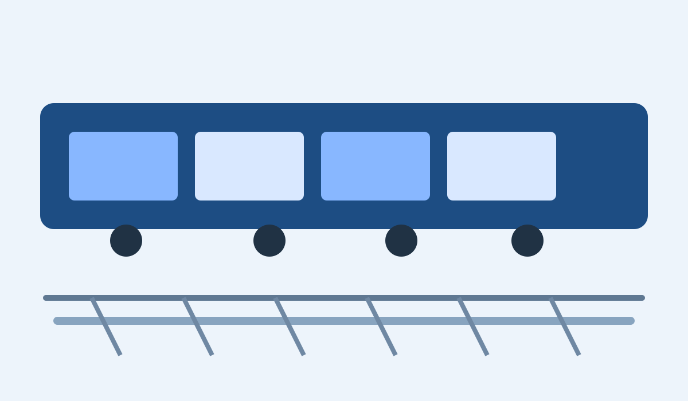
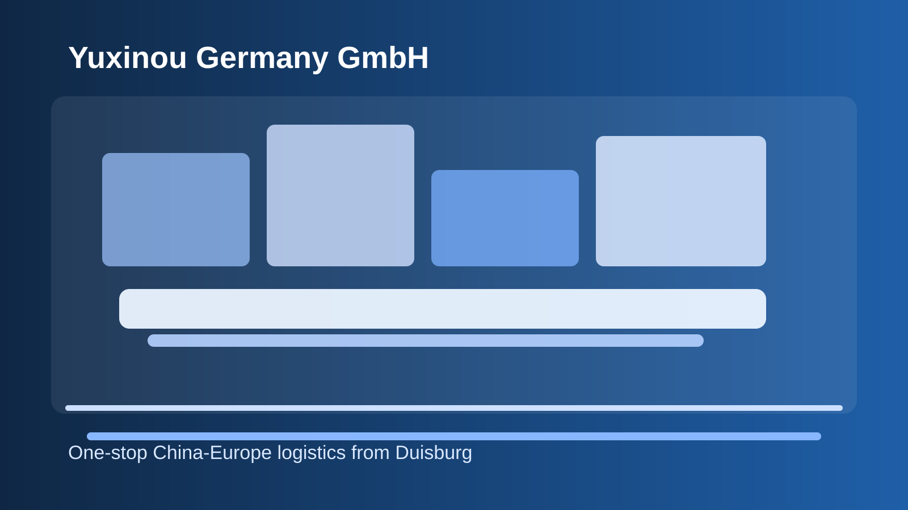
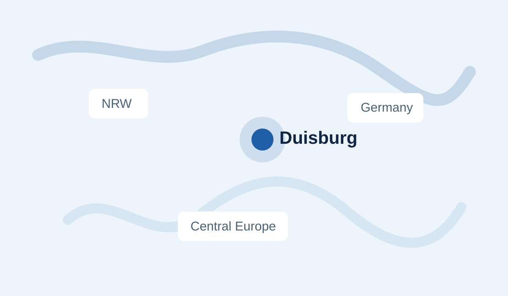

Rail-linked
China-EU Block Train Operation
Coordination of cargo movement linked to the Yuxinou / China Railway Express context, with Duisburg as a practical arrival and redistribution point.
Yuxinou Germany GmbH combines rail-linked cargo support, customs service, warehouse management, transport coordination, distribution, procurement support, and international trade logistics into one connected operational flow.

The core value is not transport in isolation. The value is continuity between rail arrival, transfer handling, customs coordination, warehouse intake, storage flow, and outbound distribution from Duisburg.
Instead of separating arrival, storage, clearance support, and onward delivery across disconnected providers, Yuxinou Germany GmbH is positioned as one practical logistics partner for cross-border execution.
Service scope reflects the confirmed business profile: rail-linked support, customs service, warehouse operations, transport coordination, Europe-wide distribution, procurement support, and international trade and e-commerce logistics.

Coordination of cargo movement linked to the Yuxinou / China Railway Express context, with Duisburg as a practical arrival and redistribution point.
Inbound receiving, organized storage, inventory flow support, and outbound preparation from a Duisburg warehouse base.
Customs-related process coordination and documentation support connected to warehouse and transport execution.

Inland movement planning and release into Germany and connected Central European destinations after inbound cargo arrives.
The strongest commercial advantage is continuity across the handoff points that usually create delays: origin coordination, arrival timing, customs-related handling, warehouse intake, and final distribution release.
Align origin, cargo type, destination needs, and likely handoff points before the cargo reaches Europe.
Coordinate terminal interface, cargo transfer, unloading logic, and next-step handling in Duisburg.
Keep document readiness, customs support, and warehouse receiving aligned so cargo does not lose momentum after arrival.
Move cargo onward into Germany or Central Europe through one connected warehouse-backed dispatch structure.
Duisburg matters operationally because it supports the transition from inbound cargo to practical inland execution. The business profile confirms warehouse presence in Duisburg Logport by the end of 2017.
Confirmed business details that support a credible B2B logistics positioning.
November 16, 2017.
Warehouse presence confirmed by the end of 2017.
Professional operational team located in both China and Germany.
Connected flow from cargo train operation and transferring to customs service, warehouse management, and distribution.
Germany, North Rhine-Westphalia, Central Europe, and the China-Europe logistics corridor.
Presented as strong operational availability, not as a guaranteed SLA.
The site messaging is built for operational buyers and decision-makers, including importers, exporters, manufacturers, wholesalers, trading companies, e-commerce businesses, and supply chain teams.
Need customs-related coordination, warehouse intake, and onward release handled as one cross-border workflow.
Need continuity, dependable inbound coordination, and warehouse-backed stock control before use or release.
Need one stock base for multi-destination release across Germany and nearby Central European markets.
Need flexibility between import, storage, customs support, and redistribution into different buyer channels.
Need inbound stock handling, organized storage, and structured outbound release from Germany.
Need cleaner coordination between sourcing, movement, customs, warehouse handling, and final release.
Serving Duisburg, North Rhine-Westphalia, Germany, Central Europe, and China through integrated warehouse, rail, customs, and distribution support.
For many B2B buyers, the key requirement is not only movement into Europe. It is using Duisburg as a practical operational base where goods can arrive, be handled, be stored, and then move onward with fewer handoff gaps.
These are positioning-oriented examples derived from the business profile, not named client endorsements.
“We need one location where rail arrival, customs documents, storage, and German delivery can be synchronized.”
Typical importer requirement“Our priority is one German hub that can release stock into several nearby countries without rebuilding the workflow each time.”
Cross-border trading requirement“We use NRW because it keeps access to the Rhine-Ruhr economy and nearby Benelux lanes in one operating geography.”
Representative distribution requirementYuxinou Germany GmbH was officially established on November 16, 2017 in Duisburg, Germany. Its development is closely tied to the Yuxinou rail corridor and the broader China Railway Express network.
The company is not positioned only as a warehouse operator and not only as a transport intermediary. It sits between international freight movement and local European fulfillment, helping clients bridge the gap from inbound arrival to final commercial distribution.
Use the form below to prepare a B2B logistics inquiry. In this local static version, the submission opens your email client with the inquiry prefilled.